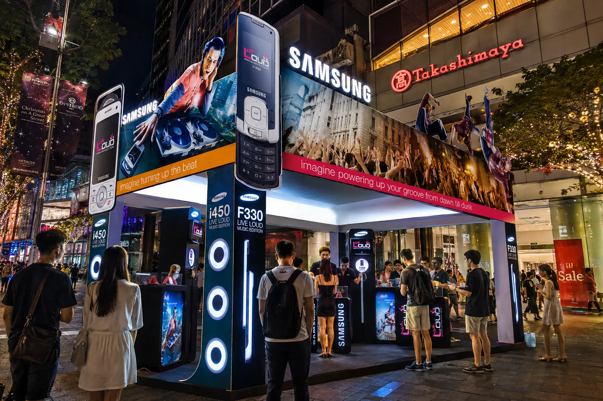
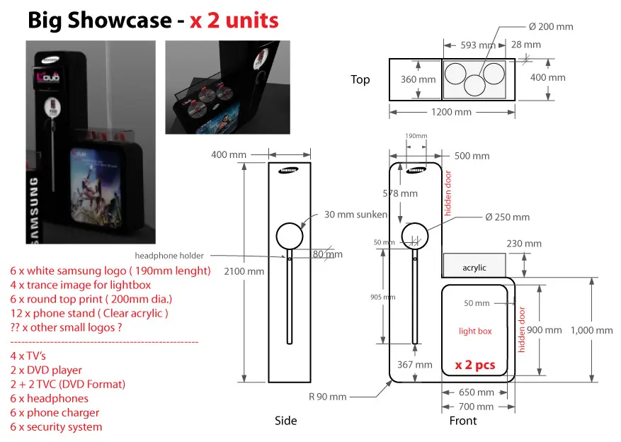

SAMSUNG · SINGAPORE · 2008
LiveLoud
Roadshow
A high-energy Samsung activation turning a compact Orchard Road footprint into a visible music and product environment.

LAYOUT STRATEGY
The 6 × 6 metre plan organizes a central stage and DJ console with handset display zones around the perimeter, keeping products legible from the surrounding public concourse.

